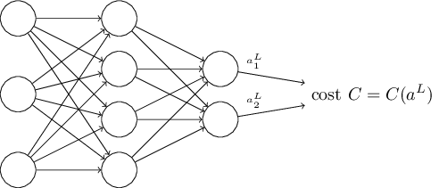
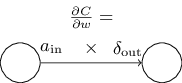

Notes for the book.
Source code for the book.
Chapter 2: How the backpropogation algorithm works
Was introduced in the 70’s, but came into light with this paper.
Today, it is the workhorse of learning in neural networks.
Warm up: a fast matrix-based approach to computing the output from a neural network
First, the notations,
For weights,

For biases and activations,

These are related,
$$\begin{eqnarray}
a^{l}j = \sigma\left( \sum_k w^{l}{jk} a^{l-1}_k + b^l_j \right),
\tag{23}\end{eqnarray}$$
which can be rewritten in vectorized form as,
$$\begin{eqnarray}
a^{l} = \sigma(w^l a^{l-1}+b^l).
\tag{25}\end{eqnarray}$$
This form is more compact and practical as we will be using libraries that provide fast matrix multiplication and vectorization capabilities.
The two assumptions we need about the cost function
The goal of backpropogation is to calculate the partial derivatives $\partial C / \partial w$ and $\partial C / \partial b$.
Here is an example of cost function we will be using(there can and will be others).
$$\begin{eqnarray}
C = \frac{1}{2n} \sum_x |y(x)-a^L(x)|^2,
\tag{26}\end{eqnarray}$$
Now, the assumptions,
- The cost function can be written as an average $C = \frac{1}{n} \sum_x C_x$ over cost $C_x$ for individual training examples.
- The cost function can be written as a function of the outputs from the neural network: 
$$\begin{eqnarray} C = \frac{1}{2} |y-a^L|^2 = \frac{1}{2} \sum_j (y_j-a^L_j)^2, \tag{27}\end{eqnarray}$$
The Hadamard product, $s \odot t$
$s \odot t$ represents the elementwise product of two vectors.
$$\begin{eqnarray}
\left[\begin{array}{c} 1 \ 2 \end{array}\right]
\odot \left[\begin{array}{c} 3 \ 4\end{array} \right]
= \left[ \begin{array}{c} 1 * 3 \ 2 * 4 \end{array} \right]
= \left[ \begin{array}{c} 3 \ 8 \end{array} \right].
\tag{28}\end{eqnarray}$$
The four fundamental equations behind backpropagation
First, we define the error in the $j^{th}$ neuron in the $l^{th}$ layer, $\delta^l_j$
$$\begin{eqnarray}
\delta^l_j \equiv \frac{\partial C}{\partial z^l_j}.
\tag{29}\end{eqnarray}$$
An equation for the error in the output layer, $\delta^L$:
$$\begin{eqnarray}
\delta^L_j = \frac{\partial C}{\partial a^L_j} \sigma'(z^L_j).
\tag{BP1}\end{eqnarray}$$
Which can again be rewritten in vectorized form,
$$\begin{eqnarray}
\delta^L = \nabla_a C \odot \sigma'(z^L).
\tag{BP1a}\end{eqnarray}$$
where, in case of a quadratic cost function, we have $\nabla_a C = (a^L-y)$.So,
$$\begin{eqnarray}
\delta^L = (a^L-y) \odot \sigma'(z^L).
\tag{30}\end{eqnarray}$$
An equation for the error $\delta^l$ in terms of the error in the next layer, $\delta^{l+1}$:
$$\begin{eqnarray}
\delta^l = ((w^{l+1})^T \delta^{l+1}) \odot \sigma'(z^l),
\tag{BP2}\end{eqnarray}$$
Suppose we know the error $\delta^{l+1}$ at the $l+q^{\rm th}$ layer. When we apply the transpose weight matrix, $(w^{l+1})^T$, we can think intuitively of this as moving the error backward through the network, giving us some sort of measure of the error at the output of the $l^{\rm th}$ layer.
By combining $(BP1)$ and $(BP2)$, we can compute the error $\delta^l$ for any layer in the network.
An equation for the rate of change of the cost with respect to any bias in the network
$$\begin{eqnarray} \frac{\partial C}{\partial b^l_j} = \delta^l_j. \tag{BP3}\end{eqnarray}$$
which can also be written as,
$$\begin{eqnarray}
\frac{\partial C}{\partial b} = \delta,
\tag{31}\end{eqnarray}$$
An equation for the rate of change of the cost with respect to any weight in the network:
$$\begin{eqnarray} \frac{\partial C}{\partial w^l_{jk}} = a^{l-1}_k \delta^l_j. \tag{BP4}\end{eqnarray}$$
which can also be written as,
$$\begin{eqnarray} \frac{\partial C}{\partial w} = a_{\rm in} \delta_{\rm out}, \tag{32}\end{eqnarray}$$
This can also be depicted as,

Looking at this image, we can also say that a weight will learn slowly if either the input neuron is low-activation, or if the output neuron has saturated, i.e. it’s gradient has become too small(when its either high- or low-activation in case of sigmoid).
Summary of the four equations of backpropagation
Proof of the four fundamental equations
We start with the expression for $\delta^L$
$$\begin{eqnarray}
\delta^L_j = \frac{\partial C}{\partial z^L_j}.
\tag{36}\end{eqnarray}$$
Applying chain rule,
$$\begin{eqnarray}
\delta^L_j = \sum_k \frac{\partial C}{\partial a^L_k} \frac{\partial a^L_k}{\partial z^L_j},
\tag{37}\end{eqnarray}$$
But, the output activation $a_k^L$ of the $k_{\rm th}$ neuron only depends on the weighted input $x_j^L$ for the $j^{\rm th}$ neuron when $k=j$. And so, $\partial a^L_k / \partial z^L_j$ vanishes when $k \neq j$. So,
$$\begin{eqnarray} \delta^L_j = \frac{\partial C}{\partial a^L_j} \frac{\partial a^L_j}{\partial z^L_j}. \tag{38}\end{eqnarray}$$
Recalling that, $a^L_j = \sigma(z^L_j)$
$$\begin{eqnarray}
\delta^L_j = \frac{\partial C}{\partial a^L_j} \sigma'(z^L_j),
\tag{39}\end{eqnarray}$$
which is $(BP1)$ in component form.
Next, we prove $(BP2)$, which gives an equation for the error $\delta^L$ in terms of the error in the next layer, $\delta^{l+1}$.
$$\begin{eqnarray}
\delta^l_j & = & \frac{\partial C}{\partial z^l_j} \tag{40}\
& = & \sum_k \frac{\partial C}{\partial z^{l+1}_k} \frac{\partial z^{l+1}_k}{\partial z^l_j} \tag{41}\
& = & \sum_k \frac{\partial z^{l+1}_k}{\partial z^l_j} \delta^{l+1}_k,
\tag{42}\end{eqnarray}$$
Now, $$\begin{eqnarray} z^{l+1}k = \sum_j w^{l+1}{kj} a^l_j +b^{l+1}k = \sum_j w^{l+1}{kj} \sigma(z^l_j) +b^{l+1}_k. \tag{43}\end{eqnarray}$$
Differentiating,
$$\begin{eqnarray} \frac{\partial z^{l+1}k}{\partial z^l_j} = w^{l+1}{kj} \sigma'(z^l_j). \tag{44}\end{eqnarray}$$
Substituting back in $(42)$,
$$\begin{eqnarray}
\delta^l_j = \sum_k w^{l+1}_{kj} \delta^{l+1}_k \sigma'(z^l_j).
\tag{45}\end{eqnarray}$$
which is $(BP2)$ in component form.
The backpropagation algorithm
- Input $x$: Set the corresponding activation $a^1$ for the input layer.
- Feedforward: For each $l = 2, 3, \ldots, L$ compute $z^l = w^la^{l−1} + b^l$ and $a^l = \sigma(z^l)$.
- Output error $\delta^L$: Compute the vector $\delta^{L} = \nabla_a C \odot \sigma'(z^L)$.
- Backpropagate the error: For each $l = L−1, L−2,\ldots, 2$ compute $\delta^{l} = ((w^{l+1})^T \delta^{l+1}) \odot \sigma'(z^{l})$.
- Output: The gradient of the cost function is given by $\frac{\partial C}{\partial w^l_{jk}} = a^{l-1}_k \delta^l_j$ and $\frac{\partial C}{\partial b^l_j} = \delta^l_j$.
The above steps show backpropagation applied w.r.t. a single training example. In practice, it is common to use some a learning algorithm like stochastic gradient descent, computing the gradients of many training examples. In particular, the following algorithm applies gradient descent learning step, based on mini-batches.
- Input a set of training examples
- For each training example $x$: Set the corresponding input activation $a^{x,1}$ and perform the following steps:
- Feedforward: For each $l = 2, 3, \ldots, L$ compute $z^{x,l} = w^l a^{x,l-1}+b^l$ and $a^{x,l} = \sigma(z^{x,l})$
- Output error $\delta^{x,L}$: Compute the vector $\delta^{x,L} = \nabla_a C_x \odot \sigma'(z^{x,L})$.
- Backpropagate the error: For each $l = L-1, L-2, \ldots, 2$ compute $\delta^{x,l} = ((w^{l+1})^T \delta^{x,l+1}) \odot \sigma'(z^{x,l})$
- Gradient descent: For each $l = L, L-1, \ldots, 2$ update the weights according to the rule $w^l \rightarrow w^l-\frac{\eta}{m} \sum_x \delta^{x,l} (a^{x,l-1})^T$, and biases according to the rule $b^l \rightarrow b^l-\frac{\eta}{m} \sum_x \delta^{x,l}$.
Of course, in practice, we would also need an outer loop, generating the mini-batches, and another outer loop, stepping through the multiple epochs, but they are just ommitted for simplicity.
The code for backpropagation
The code for backpropagation was is contained in two methods, update_mini_batch, described in the last post, and backprop method, discussed here,
def backprop(self, x, y):
"""Return a tuple "(nabla_b, nabla_w)" representing the
gradient for the cost function C_x. "nabla_b" and
"nabla_w" are layer-by-layer lists of numpy arrays, similar
to "self.biases" and "self.weights"."""
nabla_b = [np.zeros(b.shape) for b in self.biases]
nabla_w = [np.zeros(w.shape) for w in self.weights]
# feedforward
activation = x
activations = [x] # list to store all the activations, layer by layer
zs = [] # list to store all the z vectors, layer by layer
for b, w in zip(self.biases, self.weights):
z = np.dot(w, activation)+b
zs.append(z)
activation = sigmoid(z)
activations.append(activation)
# backward pass
delta = self.cost_derivative(activations[-1], y) * \
sigmoid_prime(zs[-1])
nabla_b[-1] = delta
nabla_w[-1] = np.dot(delta, activations[-2].transpose())
# Note that the variable l in the loop below is used a little
# differently to the notation in Chapter 2 of the book. Here,
# l = 1 means the last layer of neurons, l = 2 is the
# second-last layer, and so on. It's a renumbering of the
# scheme in the book, used here to take advantage of the fact
# that Python can use negative indices in lists.
for l in xrange(2, self.num_layers):
z = zs[-l]
sp = sigmoid_prime(z)
delta = np.dot(self.weights[-l+1].transpose(), delta) * sp
nabla_b[-l] = delta
nabla_w[-l] = np.dot(delta, activations[-l-1].transpose())
return (nabla_b, nabla_w)
In what sense is backpropagation a fast algorithm?
Let’s consider another approach, using numerical gradients,
$$\begin{eqnarray} \frac{\partial
C}{\partial w_{j}} \approx \frac{C(w+\epsilon
e_j)-C(w)}{\epsilon},
\tag{46}\end{eqnarray}$$
Gradients for the biases can be computed similarly.
This looks promising. It’s conceptually simple and easy to implement.
Certainly much more promising than the chain rule to compute the gradient!
However, turns out it is extremely slow. That’s because for each distinct weight $w_j$ we need to compute $C(w+\epsilon e_j)$ in order to compute $\delta C/\delta w_j$.
That means, if we have a million weights, to compute the gradient, we need to calculate the cost a million different times, requiring a million forward passes through the network.
Backpropagation enables us to simultaneously calculate all the partial derivatives using just one single forward pass through the network, followed by one backward pass. Which is roughly the same as just two forward passes through the network. And so even though backpropagation appears superficially complex, it is much, much faster.
But even that speedup was not enough in the early days, and we need some more clever ideas to make deeper networks work.
Backpropagation: the big picture
So, we have seen what backprop does, and the steps that it takes. But does that give an intuitive idea of how it does what it does?
To improve our intuition,
let’s imagine that we’ve made a small change $\Delta{w_{jk}^l}$ to some weight in the network.
That will cause a change in its output activation,
which will cause a change in all the activations in the next layer.
and it would propagate to the final cost function.

This change can also be written mathematically as,
$$\begin{eqnarray}
\Delta C \approx \frac{\partial C}{\partial w^l_{jk}} \Delta w^l_{jk}.
\tag{47}\end{eqnarray}$$
This suggests if we propagate the change $\Delta w^l_{jk}$ forward, we should be able to compute $\delta{C}/\delta w^l_{jk}$.
Let’s try that out,
The change $\Delta w^l_{jk}$ causes a small change $\Delta a_l_j$ in the activation of the $j^{th}$ neuron in the $l^{th}$ layer.
$$\begin{eqnarray}
\Delta a^l_j \approx \frac{\partial a^l_j}{\partial w^l_{jk}} \Delta w^l_{jk}.
\tag{48}\end{eqnarray}$$
This will cause change in all the activations in the next layer. We’ll concentrate on just a single such activation.
Which can be written as,
$$\begin{eqnarray}
\Delta a^{l+1}_q \approx \frac{\partial a^{l+1}_q}{\partial a^l_j} \Delta a^l_j.
\tag{49}\end{eqnarray}$$
Substituting in $(48)$,
$$\begin{eqnarray}
\Delta a^{l+1}q \approx \frac{\partial a^{l+1}q}{\partial a^l_j} \frac{\partial a^l_j}{\partial w^l{jk}} \Delta w^l{jk}.
\tag{50}\end{eqnarray}$$
And, following similar patterns, it propagates to the change in final cost $\Delta C$.